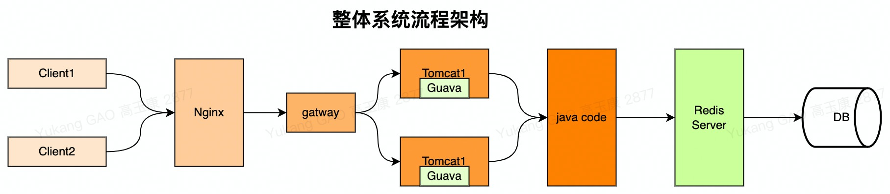
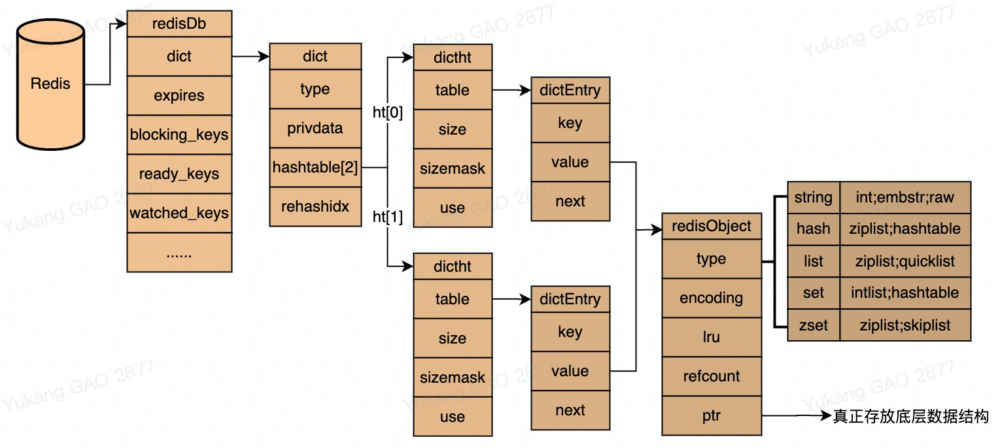
91概念2 Redis结构: 又称字典(hash表),是一种O(1)时间复杂度的数据结构.底层是基于数组结构;redis中将hash表中的每一个元素都封装成了entry对象;entity对象中保存了实际的key-value数据.3 应用: redis数据库是使用hash表来存储的.4 包括:5 ->redisDb: redis的顶层数据库结构,内部定义了数据存储结构字典dict,过期时间、用于阻塞key以及事务相关的监听.6 ->dict: 表示redis的字典结构,里面有2个哈希表,一个用来存储键值对,一个用来rehash..7 ->dictht: redis中真正的hash表,二维数组结构,内部定义了存储k-v的entry、数组长度、确定数据存放位置的模、数组内的数据量.8 ->dictEntry: 用于存储k-v数据的entry对象,内部封装了key、value字段,以及用于处理hash冲突的指针.9 ->redisObject：用于封装value数字的对象；其内部包含了value的命令类型、底层存储结构、回收策略、lru信息等；RedisDB结构
111RedisDb定义: Redis的顶层数据库结构,内部定义了数据存储结构字典dict,过期时间、用于阻塞key以及事务相关的监听.默认Redis初始化会分配16个数据库.2RedisDB结构:3 typedef struct redisDb {4 int id; //id是数据库序号,为0-15(默认Redis有16个数据库)5 long avg_ttl; //存储的数据库对象的平均ttl(time to live),用于统计6 dict *dict; //存储数据库所有的key-value7 dict *expires; //存储key的过期时间8 dict *blocking_keys; //blpop 存储阻塞key和客户端对象9 dict *ready_keys; //阻塞后push 响应阻塞客户端 存储阻塞后push的key和客户端对象10 dict *watched_keys; //存储watch监控的的key和客户端对象11 } redisDb;dict结构
101dict定义: 表示redis的字典结构,里面有2个哈希表,一个用来存储键值对,一个用来rehash. 2dict结构:3 /** This is our hash table structure. Every dictionary has two of this as we4 * implement incremental rehashing, for the old to the new table. */5 typedef struct dictht {6 dictEntry **table; //key value存储的对象7 PORT_ULONG size; //hash表大小8 PORT_ULONG sizemask; //等于size - 1;会用于后续与hash一起确定该数据存放的索引位9 PORT_ULONG used; //hash表中已使用的大小10 } dictht;dictEntry结构
131dictEntry定义: 表示一个key-value节点..2
3dictEntry结构: 4 typedef struct dictEntry {5 void *key; //redis的key 封装为SDS6 union {7 void *val; //value, 指向底层数据结构8 uint64_t u64;9 int64_t s64;10 double d;11 } v;12 struct dictEntry *next; //hash冲突时指向下一个数据节点13 } dictEntry;RedisObject结构
131RedisObject定义: Redis中封装value的对象,其每个存入到redis中的value都会被封装成redisObject对象保存；2
3RedisObject结构:4 value默认是一个对象,有String、List、Hash、Set、ZSet对象.5 typedef struct redisObject {6 unsigned type:4; //类型,五种对象类型,占4位(string、list、hash、set、zset).7 unsigned encoding:4; //编码,占4位,value的底层数据结构.8 void *ptr; //指针,指向实际保存数据的底层结构对象.9 int refcount; //引用计数器；表明了redis中的垃圾回收算法是使用了引用计数法完成的.10 unsigned lru:LRU_BITS; //对象最后一次被访问的时间,用户后续的过期策略；11 // 高16位: 最后被访问的时间.12 // 低8位: 最近访问次数.13 }robj;81 问题: redisObject中采用refcount属性来表明是否还有引用,没有被引用的话会被垃圾回收算法回收掉的,这里使用的是引用计数法完成的,引用计数法这种垃圾回收机制虽然效率很高,但是不能解决循环依赖的问题,因此可能会导致内存泄漏,Redis是如何解决的呢 ？2 答: redis中每个key-value都对应这一个底层数据结构来维护,所以就不会出现循环引用的情况了.3 4 问题: redis中的dict是通过hash算法存储的必然存在hash冲突问题,Redis是如何解决hash冲突的？5 答: dictEntry结构体中定义了next字段并且还是一个dictEntry类型的指针.以此可以得出redis是采用了拉链法来解决hash冲突.6
7 问题: 采用拉链式解决hash冲突,hashMap中当链表长度超过8时会转换成红黑树来增加查询效率,redis时如何解决查询效率问题？8 答: 当哈希表的冲突率过高时链表会很长,这时查询效率就会变低,所以有必要进行哈希表扩展,而如果哈希表存放的键值对很少的时候把size设的很大,又会浪费内存,这时就有必要进行哈希表收缩.这里扩展和收缩的过程,其实就是rehash的过程.渐进式rehash
181redis rehash过程: 将ht[0]上的Key重新按照Hash函数计算Hash值,存到ht[1]的过程. 2 ->为dict的哈希表ht[1]分配空间,分配的空间大小取决于操作类型和当前键值对数量ht[0]. used3 -->如果是扩展操作,ht[1]的大小为第一个大于等于ht[0]. used*2*2^n的整数4 -->如果是收缩操作,ht[1]的大小为第一个大于等于ht[0]. used*2^n的整数5 ->重新计算ht[0]中所有键的哈希值和索引值,将相应的键值对迁移到ht[1]的指定位置中去. 6 ->当ht[0]的所有键值对都迁移到ht[1]中去后(此时ht[0]会变成空表),把ht[1]设置为ht[0],并重新在ht[1]上新建一个空表,为下次rehash做准备. 7
8问题: 由于redis做增删改查操作的时候是单线程执行的,当数据量很大时在进行rehash操作可能会阻塞主线程,redis采用了渐进式rehash迁移. 9
10渐进式rehash过程: 在每次执行读命令时,就会对当前hash桶进行rehash迁移,直到hashtable中没有数据,在释放dictht[0]内存. 11 ->为ht[1]分配空间,此时字典同时持有ht[0]和ht[1]. 12 ->将rehashidx设为0,表示rehash正式开始. 13 ->在rehash期间,每次对字典执行任意操作时,程序除了执行对应操作之外,还会顺带将ht[0]在rehashidx索引上的所有键值对rehash到ht[1],操作完后将rehashidx的值加一. 14 ->在rehash期间,对字典进行ht[0]. size次操作之后,rehashidx的值会增加到ht[0]. size,此时ht[0]的所有键值对都已经迁移到ht[1]了,程序会将rehashidx重新置为-1,以此表示rehash完成. 15
16注意: 17 1、当redis进行rehash时由于会重新申请一块内存区域,所以在这段时间内,redis内存占比可能会明显增加. 但是当rehash结束后,内存则会恢复到平均水位. 18 2、在rehash的过程中,ht[0]和ht[1]可能同时存在键值对,因此在执行查询操作的时候两个哈希表都得查,而如果是执行插入键值对操作,则直接在ht[1]上操作就行. Redis触发rehash条件
71触发条件:2 1、服务器当前没有在执行BGSAVE或BGREWRITEAOF命令且哈希表的负载因子大于等于1时进行扩展操作. 3 2、服务器正在执行BGSAVE或BGREWRITEAOF命令且哈希表的负载因子大于等于5时进行扩展操作. 4 3、当前负载因子小于0. 1时进行收缩操作. 5 6扩展因子: 7 这里负载因子的计算公式为: 负载因子=哈希表当前保存节点数/哈希表大小,而之所以在服务器进行BGSAVE或BGREWRITEAOF的时候负载因子比较大才进行扩展操作是因为此时Redis会创建子进程,而大多数操作系统采取了写时复制的技术来优化子进程使用效率,不适合在这种时候会做大规模的数据迁移活动,说白了就是为了节约内存和提升效率.
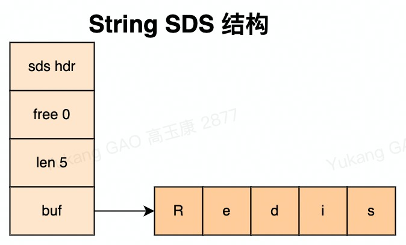
151Redis使用SDS(Simple Dynamic String)作为String类型结构.2struct sdshdr{3 int len; //记录buf数组中已使用字节的数量.4 int free; //记录 buf 数组中未使用字节的数量.5 char buf[]; //字符数组,用于保存字符串.6}7
8SDS优点:9 1、效率高: C字符串基础上加入了free和len字段,获取字符串长度: SDS是O(1)[len+free+1],C字符串是O(n).10 2、安全动态扩容: SDS因为记录了长度对于可能造成缓冲区溢出时,会重新分配内存.11 3、二进制安全: 可以存取二进制数据,以字符串长度len来作为结束标识.12 -> C字符串,\0空字符串,二进制数据包含空字符串,没办法存储二进制数据.13 -> SDS,非二进制\0.有len属性可以存储二进制数据.14
15应用场景: 存储字符串和整型数据、存储key、AOF缓冲区和用户输入缓冲.11 整形数组在redis中使用的场景较少,只有set的数据类型中可能会使用到；该数据类型特点就是只能存储整形数据,同时redis中使用的整形数组会自动进行递增排序处理.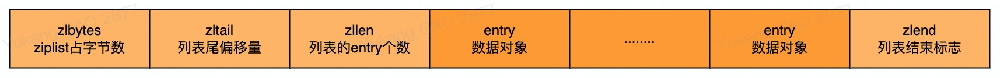
331定义: 2 ziplist是由一系列特殊编码的连续内存块组成的顺序型数据结构.ziplist数据结构是redis在linklist的基础上进行了改进,将双端指针改为使用数组存储,大大节省了内存开销.3
4结构:5 struct ziplist<T>{6 unsigned int zlbytes; // ziplist的长度字节数,包含头部、所有entry和zipend.7 unsigned int zloffset; // 从ziplist的头指针到指向最后一个entry的偏移量,用于快速反向查询8 unsigned short int zllength; // entry元素个数9 T[] zlentry; // 元素值10 unsigned char zlend; // ziplist结束符,值固定为0xFF11 }12
13 typedef struct zlentry {14 unsigned int prevrawlensize; //previous_entry_length字段的长度15 unsigned int prevrawlen; //previous_entry_length字段存储的内容16 unsigned int lensize; //encoding字段的长度 17 unsigned int len; //数据内容长度 18 unsigned int headersize; //当前元素的首部长度,即previous_entry_length字段长度与 encoding字段长度之和.19 unsigned char encoding; //数据类型20 unsigned char *p; //当前元素首地址21 } zlentry;22
23优点:24 ->ziplist是一种经过特殊编码的双链表,其非常节省内存.25 ->同时他可以存储字符串和整形数据.26 ->可以以O(1)的时间复杂度完成任一侧的push和pop操作.27
28缺点:29 虽然ziplist可以很大程度上减少内存开销,但是每次对ziplist的操作都会使其重新分配内存,因此ziplist的时间复杂度和实际使用的内存大小有关.30
31应用:32 ->zset和hash元素个数少且是小整数或短字符串(直接使用). 33 ->list用快速链表(quicklist)数据结构存储,而快速链表是双向列表与压缩列表的组合.(间接使用).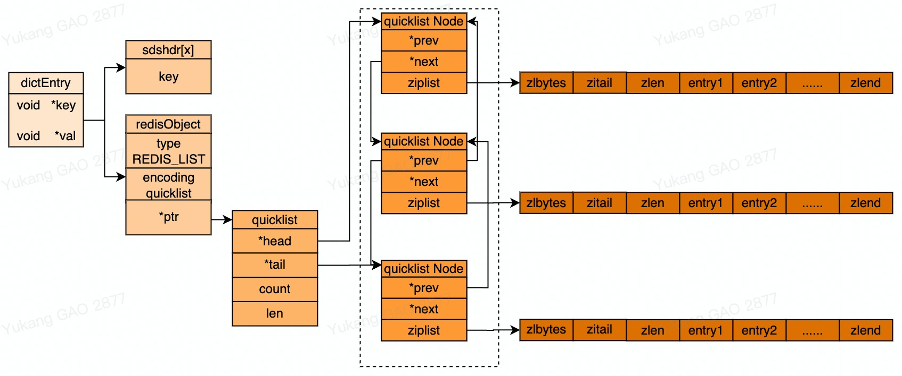
481产生原因:2 由于ziplist的内存是连续的,如果待插入的元素的内存比较大或者数量比较多哦,导致ziplist内存不足,会触发redis内存重分配,会导致效率严重下降,reidis使用quicklist来解决这哥问题. 3
4quicklist定义:5 qiucklist是双端链表,每个节点都是由ziplist组成,当ziplist的元素个数达到预设的上线时,就会分裂出一个新的ziplist,并使用双端列表关联. 6
7quicklist优点(双向链表):8 1. 双向: 链表具有前置节点和后置节点的引用,获取这两个节点时间复杂度都为O(1). 9 2. 普通链表(单链表): 节点类保留下一节点的引用. 链表类只保留头节点的引用,只能从头节点插入删除. 10 3. 无环: 表头节点的prev指针和表尾节点的next指针都指向 NULL,对链表的访问都是以 NULL 结束. 环状:头的前一个节点指向尾节点. 11 4. 带链表长度计数器: 通过len属性获取链表长度的时间复杂度为O(1). 12 5. 多态: 链表节点使用void*指针来保存节点值,可以保存各种不同类型的值. 13
14quicklist配置:15 1. 在redis的配置文件中,可以设置ziplist的存储节点的大小,当达到存储ziplist内存大小时,就会触发quicklist的节点分裂. 16 # Lists are also encoded in a special way to save a lot of space. 17 # The number of entries allowed per internal list node can be specified18 # as a fixed maximum size or a maximum number of elements. 19 # For a fixed maximum size, use -5 through -1, meaning:20 # -5: max size: 64 Kb <-- not recommended for normal workloads21 # -4: max size: 32 Kb <-- not recommended22 # -3: max size: 16 Kb <-- probably not recommended23 # -2: max size: 8 Kb <-- good24 # -1: max size: 4 Kb <-- good25 # Positive numbers mean store up to _exactly_ that number of elements26 # per list node. 27 # The highest performing option is usually -2 (8 Kb size) or -1 (4 Kb size),28 # but if your use case is unique, adjust the settings as necessary. 29 list-max-ziplist-size -230 2. 为了更好的节省quicklist的内存消耗,redis还可以配置化的设置quicklist是否进行压缩(默认不进行压缩). 31 # Lists may also be compressed. 32 # Compress depth is the number of quicklist ziplist nodes from *each* side of33 # the list to *exclude* from compression. The head and tail of the list34 # are always uncompressed for fast push/pop operations. Settings are:35 # 0: disable all list compression36 # 1: depth 1 means "don't start compressing until after 1 node into the list,37 # going from either the head or tail"38 # So: [head]->node->node->. . . ->node->[tail]39 # [head], [tail] will always be uncompressed; inner nodes will compress. 40 # 2: [head]->[next]->node->node->. . . ->node->[prev]->[tail]41 # 2 here means: don't compress head or head->next or tail->prev or tail,42 # but compress all nodes between them. 43 # 3: [head]->[next]->[next]->node->node->. . . ->node->[prev]->[prev]->[tail]44 # etc. 45 list-compress-depth 046
47注意:48 quicklist的两端都是进行会被访问到的,如果进行压缩的话会影响查询效率,所以其头尾两端是不参与压缩的.
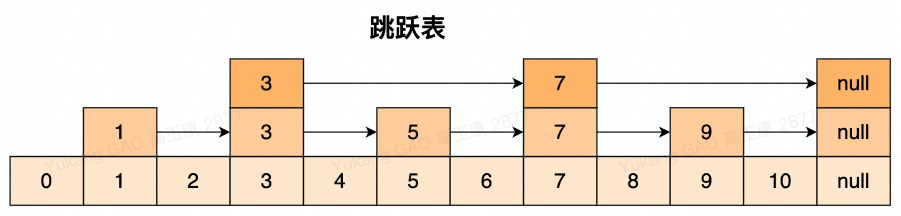
381概念2 跳跃表是有序集合zset的底层实现,效率高,实现简单.3 4核心思想5 将有序链表中的部分节点分层,每一层都是一个有序链表.6
7结构8// 跳跃表9typedef struct zskiplist{ 10 structz skiplistNode *header, *tail; //表头节点和表尾节点11 unsigned long length; //表中节点的数量12 int level; //表中层数最大的节点的层数13}zskiplist; 14// node15typedef struct zskiplistNode {16 sds ele; //存储字符串类型数据.17 double score; //存储排序的分值18 struct zskiplistNode *backward; //后退指针,指向当前节点最底层的前一个节点 19 struct zskiplistLevel { //层,柔性数组,随机生成1-64的值20 struct zskiplistNode *forward; //指向本层下一个节点21 unsigned int span; //本层下个节点到本节点的元素个数22 } level[];23} zskiplistNode;24
25增删查26 查询: 优先从最高层开始向后查找,如果next节点值大于目标值或next节点为null,则从当前节点下降一层继续查找.27 插入: 类似抛硬币(概率1/2)的方式来决定新插入结点跨越的层数,一半概率插入到上层,一半儿的概率不插入.28 删除: 找到指定元素并删除每层元素.29
30特点31 1、每层都是一个有序链表.32 2、查找次数近似于层数(1/2).33 3、底层包含所有元素.34 4、空间复杂度 O(n) 扩充了一倍.35
36优点37 1、可以快速查找到需要的节点 O(logn).38 2、可以在O(1)的时间复杂度下,快速获得跳跃表的头节点、尾结点、长度和高度.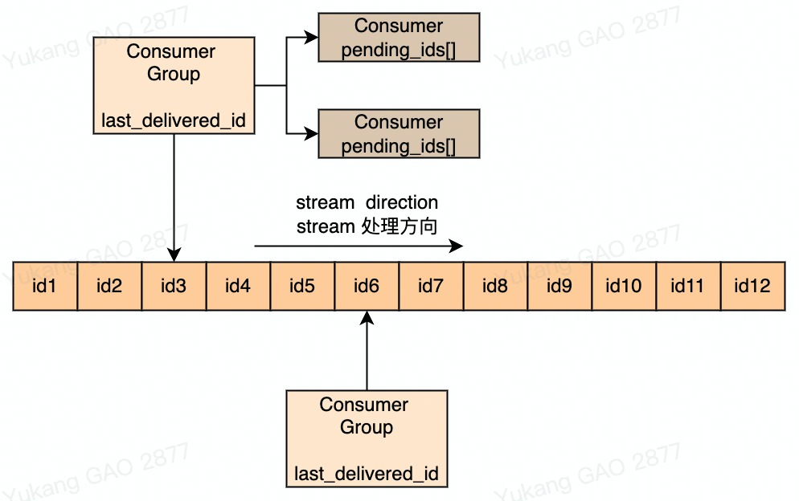
201stream应用:2 主要用于消息队列(MQ,Message Queue). 3
4stream组成:5 由消息、生产者、消费者和消费组组成,底层实现的数据结构是listpack(紧凑列表)和Rax树(基数树). 6
7stream缺点:8 1. 消费者下线,数据会丢失. 9 2. 不支持数据持久化,redis宕机,数据也会丢失,Pub/Sub 没有基于任何数据类型实现,不会写入到RDB和AOF中,当Redis宕机重启,Pub/Sub 的数据也会全部丢失. 10 3. 消息堆积,缓冲区溢出,消费者会被强制踢下线,数据也会丢失. 11 缓冲区的默认配置：client-output-buffer-limit pubsub 32mb 8mb 60. 12 -> 32mb: 缓冲区一旦超过32MB,Redis直接强制把消费者踢下线. 13 -> 8mb + 60: 缓冲区超过8MB,并且持续60秒,Redis也会把消费者踢下线. 14
15listpack:16 紧凑列表一个字符串列表的序列化,listpack可用于存储字符串或整数. 用于存储stream的消息内容. 17
18Rax树:19 Rax是一个有序字典树(基数树 Radix Tree),按照key的字典序排列,支持快速地定位、插入和删除操作. 20 Rax用在Stream的结构里面用于存储消息队列,消息ID的前缀是时间戳+序号,这样的消息可以理解为时间序列消息. 使用Rax结构进行存储就可以快速地根据消息ID定位到具体的消息,然后继续遍历指定消息之后的所有消息. 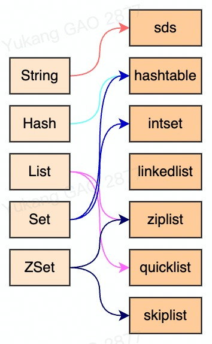
171通过命令 object encoding keyName查看key对应的value编码2 31. string编码4 ->int: 针对简单的int类型的value值编码. 5 ->embstr: 编码的简单动态字符串,针对小字符串 长度小于44个字节(只分配一次空间,且是连续的). 6 ->raw: 大字符串,长度大于44个字节(分配两次内存,一次分配robj,一次分配sdshdr8,内存不一定连续,性能低于embstr,但是,按照设计可存储更多的数据). 73. hash编码 8 ->hashtable: 当hash表元素的个数比较多或元素不是小整数或短字符串时. [hmset key username zhangfei]9 ->ziplist: 当元素的个数比较少,且元素都是小整数或短字符串时. hmset key username zhangfei password 111 age 23 sex M102. list编码11 ->quicklist: 针对元素比较少编码. [lpush key 1 2 5 4 3]123. set编码13 ->intset: 当redis集合类型的元素都是整数并且都处在64位有符号整数范围内(<18446744073709551616). 14 ->dict: 当Redis集合类型的元素是非整数或处在64位有符号整数范围外. 154. zset编码16 ->ziplist: 当元素的个数比较少,且元素都是小整数或短字符串时. 17 ->skiplist: 当元素的个数比较多或元素不是小整数或短字符串时. 101expire命令: 给key设置过期时间的命令. 2ttl命令: 查看key剩余过期时间. 3
4使用: 5-> expire key 2 #2秒失效6-> ttl key7
8expire原理: 9 将设置过期的key存储在redisDb中的expires属性中;10 执行过程:用户输入expire命令,程序首先到在dict结构中查找key是否存在,存在的话将key和失效时间添加到expires这个字典表;根据不同的过期策略对key进行删除. 211定时过期: 给每个设置过期的key创建一个定时器,到了过期时间立即删除key.2 优点: 到过期时间可以立即删除key,比较节约内存.3 缺点: 会占用大量的CPU去处理过期的数据,比较影响redis的响应和吞吐量. 4
5惰性过期: 对于已过期的key,在访问的时候检测key是否过期,如果过期的话立即清除.6 优点: 比较节省CPU.7 缺点: 比较耗内存.8
9定期过期: 将过期的key放在同一个的字典,定期遍历这个字典来删除过期的key(redis中默认是100ms扫描1次).10 优点: CPU和内存达到一个平衡点.11 问题: 如果存在大量的过期key,每次都遍历所有的key的话可能会阻塞线程执行.怎么解决?12 解决: 在定期扫描的时候不会扫描所有的key,而是采用简单的贪心策略.13 -> 从过期字典中随机20个key,删除已过期的key.14 -> 如果过期key的数量超过1/4,在重复以上步骤.15
16redis实际使用的过期策略: redis同时采用惰性过期和定期过期两种策略.17 -> redis过期删除采用的是定期删除,默认每100ms检测一次,18 -> 当访问某个已过期但是还未来得及删除的key,就会进行惰性过期去检测是否过期,过期的话就删除.19
20考虑: redis同时采用惰性过期和定期过期就一定能保证高并发下key的时效性么?21 -> 不一定, 如果在执行定期过期的时候随机了20个key刚好一个key过期还没来及删除的时候这个时候访问key的时候,redis是不会使用惰性过期的,就会导致key没有删除,内存会越来越高.因此redis设计了内存淘汰策略.371redis4.0开始,8种内存淘汰策略:2 -> noeviction: 默认策略,不淘汰数据;大部分写命令都将返回错误(DEL等少数除外).3 -> allkeys-lru: 从所有数据中根据LRU算法挑选数据淘汰.4 -> volatile-lru: 从设置了过期时间的数据中根据LRU算法挑选数据淘汰. 5 -> allkeys-random: 从所有数据中随机挑选数据淘汰.6 -> volatile-random: 从设置了过期时间的数据中随机挑选数据淘汰.7 -> volatile-ttl: 从设置了过期时间的数据中,挑选越早过期的数据进行删除.8 -> allkeys-lfu: 从所有数据中根据LFU算法挑选数据淘汰(4.0及以上版本).9 -> volatile-lfu: 从设置了过期时间的数据中根据LFU算法挑选数据淘汰(4.0及以上版本).10
11LRU算法12 定义: LRU(Least Recently Used)最近最少使用. 优先淘汰最近未被使用的数据."如果数据最近被访问过,那么将来被访问的几率也更高". 13 实现: LRU底层结构是hash表+双向链表. hash表用于保证查询操作的时间复杂度是O(1), 双向链表用于保证节点插入/删除的时间复杂度是O(1). 14 思考: 为啥使用双向链表,而不使用单链表?15 解决: 单链表在头部插入新节点和尾部删除旧节点时间复杂度都是O(1),删除中间节点时间复杂度是O(n),因为对于中间节点,需要将该节点移动到头部,此时只知道它的下一个节点,要知道其上一个节点需要遍历整个链表,时间复杂度为O(n). 双向链表在删除中间节点时间复杂度为O(1),因为知道上一个节点和下一个节点.16 LRU GET操作: 节点存在的话,将节点移动到链表头部并返回节点值. 17 LRU PUT操作: 节点不存在,新增节点并放到链表的头部;节点存在则修改节点并放到链表的头部.18 LRU 算法缺点: 1.采用双向链表管理数据需要额外的内存;2.每次设置的过期key访问都需要进行数据迁移,比较耗性能;3.redis现有的数据结构不支持,需要进行改造.19
20近似LRU算法21 定义: redis key是一个redisObject对象,其中lru属性记录了最后一次访问的时间(redis在处理数据时,都会调用lookupKey方法更新该key的lru时钟), 当使用的内存大于配置的最大内存时,redis通过freeMemoryIfNeeded方法完成数据淘汰. 22 freeMemoryIfNeeded数据淘汰方法逻辑: 23 -> 首次淘汰: 随机抽选出N个数据放入待淘汰数据池(N是配置项maxmemory-samples默认5, 10的话非常接近原生LRU算法耗CPU资源).24 -> 再次淘汰: 再随机抽选出N个数据,与待淘汰数据池中数据比对,只要数据比待淘汰数据池中的任意一条数据的lru小,将该数据填充至待淘汰数据池.25 -> 执行淘汰: 挑选待淘汰数据池中lru最小的一条数据进行淘汰.26 问题: 如果在挑选数据一直没有达到N个redis该如何处理?27 解决: redis为了避免抽选找不到足够的数据,强制写死了单次寻找数据的最大次数,maxmemory-samples.28 29LFU算法30 定义: LFU(Least Frequently Used)使用频率最少的数据优先淘汰,"如果一个数据在最近一段时间很少被访问到，那么将来被访问的可能性也很小".31 实现: LFU使用Morris counter概率计数器对数据进行访问的数量.32 Morris算法: 仅使用几bit就可以维护访问频率,利用随机算法来增加计数,在Morris算法中,计数不是真实的计数,它代表的是实际计数的量级.33 淘汰方法逻辑:34 -> 将lru属性中的LRU_BITS字段(24位)分为2部分存储;35 -> ldt: (last decrement time)前16位存储存储上一次LOG_C更新的时间(精度分钟).36 -> LOG_C:(logarithmic counter)后8位,存储key被访问频率(最大255). 37 -> 注意: LOC_C存储的是访问频率不是访问次数,访问频率会随着时间衰减;新创建key,LFU_INIT_VAL=5,避免刚被创建即被淘汰.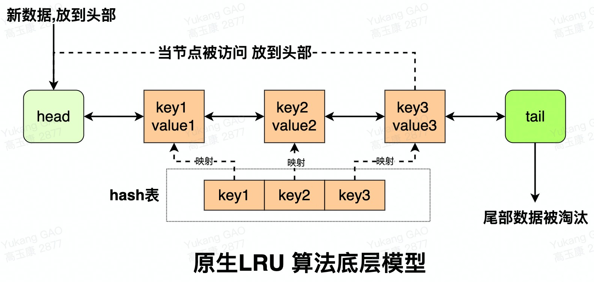
621redis通信协议类型: 21. 序列化请求响应模式(ping-pong): 3 -> 串行化是最简单模式,客户端与服务器端建立长连接;4 -> 连接通过心跳机制检测(ping-pong)ack应答;5 -> 客户端发送请求,服务端响应,客户端收到响应后,再发起第二个请求,服务器端再响应;6 -> 缺点: 耗时在网络传输命令,性能较低(telnet和redis-cli属于该种模式交互).72. 双工请求响应模式(pipeline):8 -> 批量请求,批量响应;9 -> 请求响应交叉进行,不会混淆(TCP双工);10 -> pipeline作用: 将一批命令进行打包 发送给服务器,服务器执行完按顺序打包返回给客户端;一次pipeline(n条命令)=1次网络时间 + n次命令时间.11双工请求伪代码:12 Jedis redis = new Jedis("192.168.1.111", 6379).auth("12345678"); 13 Pipeline pipe = jedis.pipelined(); 14 for (int i = 0; i <50000; i++) { 15 pipe.set("key_"+String.valueOf(i),String.valueOf(i)); 16 }17 //将封装后的PIPE一次性发给redis 18 pipe.sync();193. 原子化的批量请求响应模式(事务):20 -> redis可以利用事务机制批量执行命令.214. 发布订阅模式(pub/sub):22 -> 一个客户端触发,多个客户端被动接收,通过服务器中转.235.脚本化的批量执行(lua):24 -> 客户端向服务器端提交一个lua脚本,服务器端执行该脚本.25注意: 26 -> redis协议位于TCP层之上,即客户端和Redis实例保持双工的连接.27 -> redis客户端redis服务器采用序列化请求响应模式(RESP)进行交互;28redis通信协议特点:29 -> 客户端和服务器通过TCP连接来进行数据交互.30 -> 客户端和服务器发送的命令或数据一律以\r\n(CRLF)结尾.31 -> 所有发送至服务器的参数都是二进制安全(binary safe)的.32 -> 简单;高效;易读;33
34
35redis请求数据格式:361. 内联格式: 使用telnet给redis发送命令,首字符为redis命令名的字符，格式为 str1 str2 str3...37 [root bin]# telnet 127.0.0.1 6379 38 Trying 127.0.0.1... 39 Connected to 127.0.0.1. 40 Escape character is '^]'. 41 ping 42 +PONG 43 exists name 44 :1 452. 规范格式(redis-cli) RESP:46 -> 间隔符号,在Linux下是\r\n;在Windows下是\n. 47 -> 简单字符串(Simple Strings),以"+"开头.48 -> 错误(Errors),以"-"开头.49 -> 整数型(Integer),以":"开头. 50 -> 大字符串类型(Bulk Strings),以"$"开头,长度限制512M.51 -> 数组类型(Arrays),以"*"开头.52 -> 用SET命令来举例说明RESP协议的格式:53 redis> SET mykey Hello 54 "OK"55 实际发送的是 *3\r\n$3\r\nSET\r\n$5\r\nmykey\r\n$5\r\nHello\r\n56 *357 $358 SET 59 $560 mykey 61 $562 Hello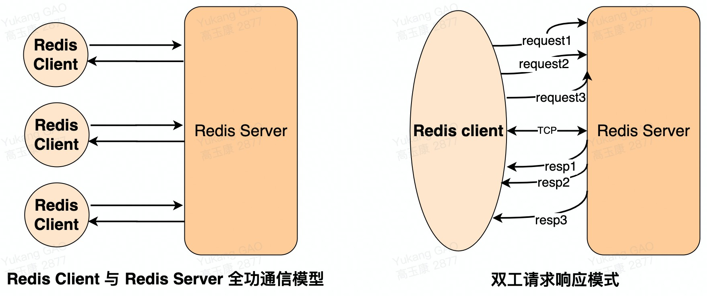
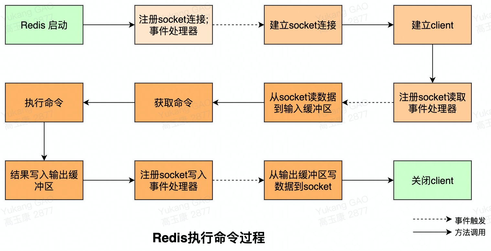
redis命令处理流程
391redis命令处理流程:21. Server启动时监听socket3 -> 启动调用 initServer方法.4 -> 创建eventLoop(事件机制).5 -> 注册时间事件处理器.6 -> 注册文件事件(socket)处理器.7 -> 监听socket建立连接.82. 建立Client9 -> redis-cli建立socket.10 -> redis-server为每个连接(socket)创建一个client对象.11 -> 创建文件事件监听socket.12 -> 指定事件处理函数.133. 读取socket数据到输入缓冲区14 -> 从client中读取客户端的查询缓冲区内容.154. 解析获取命令16 -> 将输入缓冲区中的数据解析成对应的命令.17 -> 判断是单条命令还是多条命令并调用相应的解析器解析.185. 执行命令: 调用processCommand方法执行命令19 -> 调用lookupCommand方法获得对应的redisCommand.20 -> 检测当前redis是否可以执行该命令.21 -> 调用call方法真正执行命令.226. 协议响应格式23 -> 状态回复: 对于状态,回复的第一个字节是"+"比如"+OK".24 -> 错误回复: 对于错误,回复的第一个字节是"-"比如-ERR unknown command 'xxx'.25 -> 整数回复: 对于整数,回复的第一个字节是":"比如":6".26 -> 批量回复: 对于批量字符串,回复的第一个字节是"$"比如"$6 xxx".27 -> 多条批量回复: 对于多条批量回复(数组),回复的第一个字节是"*"比如"*3".287. 协议解析及处理29 -> 协议解析: 在redis客户端输入命令后,redis-cli会把命令转化为RESP协议格式,然后发送给服务器,服务器再对协议进行解析,步骤如下.30 1) 解析命令请求参数数量: 命令请求参数数量的协议格式为"*N\r\n",其中N就是数量.31 2) 循环解析请求参数: 首字符必须是"$",使用"/r"定位到行尾,之间的数是参数的长度,从"/n"后到下一个"$"之间就是参数的值了循环解析直到没有"$".32 -> 协议处理: 先校验参数个数是否一致;在调用函数processCommand处理该命令请求,processCommand函数处理步骤如下.33 1) quit校验: 如果是"quit"命令,直接返回并关闭客户端.34 2) 命令语法校验: 执行lookupCommand,查找命令(set),如果不存在则返回:“unknown command”错误.35 3) 参数数目校验: 参数数目和解析出来的参数个数要匹配,如果不匹配则返回:“wrong number of arguments”错误.36 4) 权限校验;最大内存校验;集群校验;持久化校验...37 5) 调用call函数执行命令,并记录命令执行时间和调用次数.38 6) 执行命令时间过长还要记录慢查询日志.39 7) 执行命令后返回结果的类型不同则协议格式也不同,分为5类:状态回复;错误回复;整数回复;批量回复;多条批量回复. 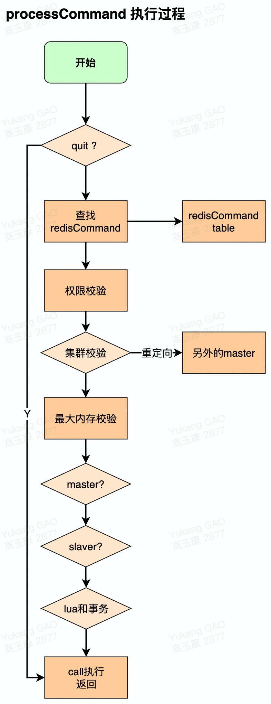
概述
11redis服务器是典型的事件驱动系统;redis将事件分为两大类,文件事件和时间事件.81文件事件2 定义: 就是socket的读写事件,也就是IO事件,客户端的连接;命令请求;数据回复;连接断开.3 socket: 套接字是一个抽象层,应用程序可以通过它发送或接收数据.4 reactor使用: redis事件处理机制采用单线程的reactor模式,属于I/O多路复用的一种常见模式.5 -> I/O多路复用: (I/O multiplexing)指的通过单个线程管理多个socket(可参考linux中的多路复用器).6 -> reactor pattern: 反应器设计模式,是一种处理并发服务请求,并将请求提交到一个或者多个服务处理程序的事件设计模式. 7 -> reactor模式: 属于一种事件驱动模式,有一个或多个输入源(文件事件);有一个Service Handler;有多个Request Handlers.8 -> Service Handler会同步的将输入的请求(Event)多路复用的分发给相应的Request Handler.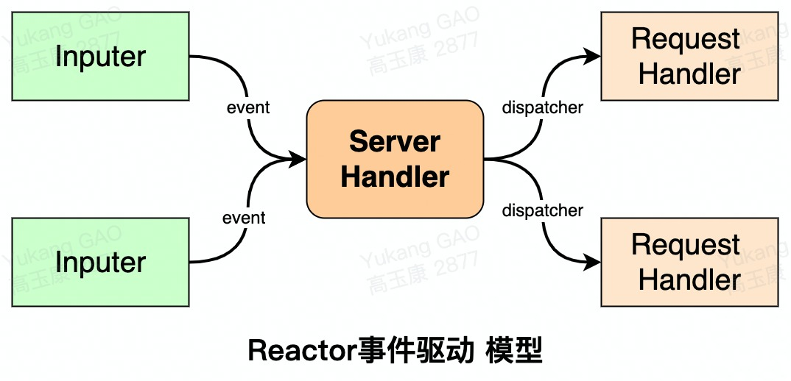
reactor模式结构
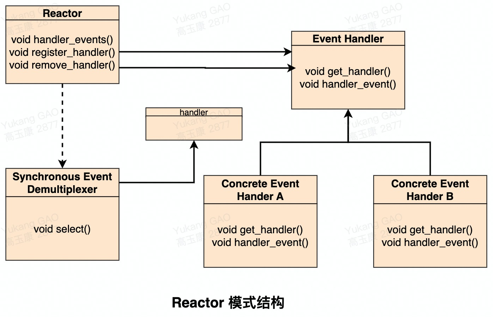
101名词解释:2 -> Handler: I/O操作的基本文件句柄,在linux下就是fd(文件描述符).3 -> Synchronous Event Demultiplexer: 同步事件分离器,阻塞等待Handles中的事件发生(系统).4 -> Reactor: 事件分派器,负责事件的注册,删除以及对所有注册到事件分派器的事件进行监控,当事件发生时会调用Event Handler接口来处理事件.5 -> Event Handler: 事件处理器接口,这里需要Concrete Event Handler来实现该接口.6 -> Concrete Event Handler: 真实的事件处理器,通常都是绑定了一个handler,实现对可读事件进行读取或对可写事件进行写入的操作.7
8时序:9 -> 主程序向Reactor(事件分派器)注册要监听的事件.10 -> Reactor调用OS提供的事件处理分离器,监听事件(wait)当有事件产生时,Reactor将事件派给相应的处理器来处理handle_event().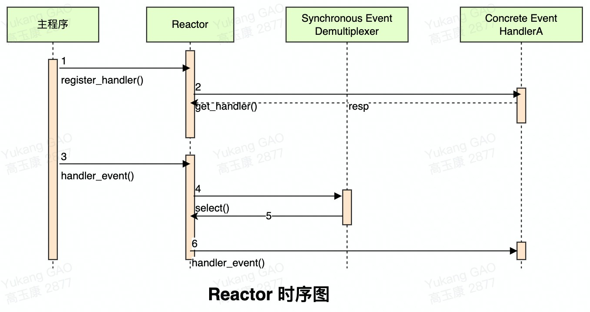
文件事件分派器
121redis中,对于文件事件的处理采用了reactor模型,采用的是epoll的实现方式.2redis在主循环中统一处理文件事件和时间事件,信号事件则由专门的handler来处理.3 void aeMain(aeEventLoop *eventLoop) {4 eventLoop->stop = 0;5 while (!eventLoop->stop) { //循环监听事件6 // 阻塞之前的处理7 if (eventLoop->beforesleep != NULL)8 eventLoop->beforesleep(eventLoop);9 // 事件处理，第二个参数决定处理哪类事件10 aeProcessEvents(eventLoop, AE_ALL_EVENTS|AE_CALL_AFTER_SLEEP);11 }12 }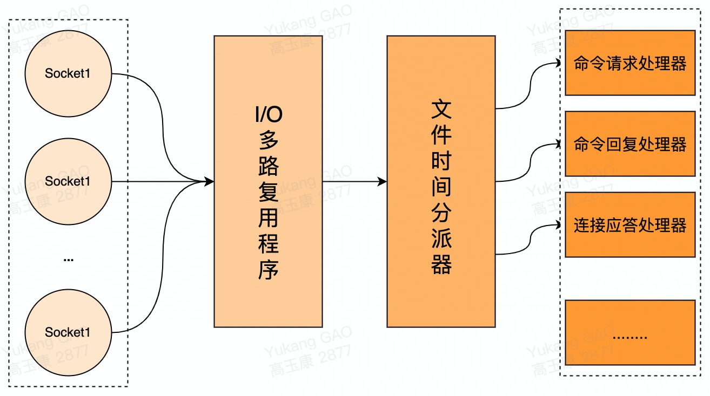
371定义: 时间事件分为定时事件和周期事件.2
3组成:4 -> id(全局唯一id).5 -> when(毫秒时间戳,记录了时间事件的到达时间).6 -> timeProc(时间事件处理器,当时间到达时,redis就会调用相应的处理器来处理事件).7
8结构:9 //时间事件结构10 typedef struct aeTimeEvent {11 // 时间事件的唯一标识符12 long long id; /* time event identifier. */13 // 事件的到达时间，存贮的是UNIX的时间戳14 long when_sec; /* seconds */15 long when_ms; /* milliseconds */16 // 事件处理函数，当到达指定时间后调用该函数处理对应的问题17 aeTimeProc *timeProc;18 // 事件释放函数19 aeEventFinalizerProc *finalizerProc;20 // 多路复用库的私有数据21 void *clientData;22 // 指向下个时间事件结构，形成链表23 struct aeTimeEvent *next;24 } aeTimeEvent;25
26serverCron函数: 时间事件主要为了redis自身的资源和配置的定期调整,这些操作由redis.c中的serverCron函数实现.函数包括以下几个操作内容.27 -> 更新redis服务器各类统计信息(包括时间;内存占用;数据库占用等).28 -> 清理数据库中的过期键值对.29 -> 关闭和清理连接失败的客户端.30 -> 尝试进行aof和rdb持久化操作.31 -> master服务器会定期将数据向salver服务器做同步操作.32 -> 处于集群模式,对集群定期进行同步与连接测试操作.33 执行频率: 默认每秒执行10次,平均100毫秒执行一次,可以在redis配置文件的hz选项进行配置 (hz 100 每秒执行100次).34 35定时事件: 让程序在指定的时间之后执行一次.aeTimeProc(时间处理器)的返回值是AE_NOMORE该事件在达到后删除,之后不会再重复。36 37周期性事件: 让程序每隔指定时间就执行一次.当时间事件到达后,服务器会根据时间处理器的返回值,对时间事件的when属性进行更新,让这个事件在一段时间后再次达到(serverCron就是一个典型的周期性事件).811地位: aeEventLoop是整个事件驱动的核心,redis自己的事件处理机制.2
3作用: 它管理着文件事件列表和时间事件列表,不断地循环处理着就绪的文件事件和到期的时间事件.4
5结构:6 typedef struct aeEventLoop {7 int maxfd; //最大文件描述符的值8 int setsize; //文件描述符的最大监听数9 long long timeEventNextId; //用于生成时间事件的唯一标识id10 time_t lastTime; //用于检测系统时间是否变更（判断标准 now<lastTime）11 aeFileEvent *events; //注册的文件事件12 aeFiredEvent *fired; //已就绪的事件13 aeTimeEvent *timeEventHead; //注册要使用的时间事件14 int stop; //停止标志，1表示停止15 void *apidata; //这个是处理底层特定API的数据，对于epoll来说，该结构体包含了epoll fd和epoll_event16 aeBeforeSleepProc *beforesleep; //在调用processEvent前（即如果没有事件则睡眠），调用该处理函数17 aeBeforeSleepProc *aftersleep; //在调用aeApiPoll后，调用该函数18 } aeEventLoop;19
20初始化: redis服务端在其初始化函数initServer中,会创建事件管理器aeEventLoop对象,aeCreateEventLoop函数创建一个事件管理器,初始化以下属性.21 -> 创建aeEventLoop对象.22 -> 初始化注册的文件事件表;就绪文件事件表. events指针指向注册的文件事件表;fired指针指向就绪文件事件表. 表的内容在后面添加具体事件时进行初变更.23 -> 初始化时间事件列表,设置timeEventHead和timeEventNextId属性.24 -> 调用aeApiCreate函数创建epoll实例,并初始化apidata.25
26stop属性: 停止标志,1表示停止;初始化为0.27
28文件事件相关属性:*events;*fired;*apidata;291. aeFileEvent *events属性: 已经注册并需要监听的事件的结构体.30 typedef struct aeFileEvent {31 int mask; // 监听事件类型掩码， 值可以是 AE_READABLE 或 AE_WRITABLE ，或者 AE_READABLE | AE_WRITABLE 32 aeFileProc *rfileProc; // 读事件处理器33 aeFileProc *wfileProc; // 写事件处理器34 void *clientData; // 多路复用库的私有数据35 } aeFileEvent;362. aeFiredEvent *fired属性: 已就绪的文件事件结构体.37 typedef struct aeFiredEvent {38 int fd; // 已就绪文件描述符39 int mask; // 事件类型掩码，值可以是 AE_READABLE 或 AE_WRITABLE 或者是两者的或40 } aeFiredEvent;41
423. void *apidata: 在ae创建的时候,会被赋值为aeApiState结构体. 为了epoll所准备的数据结构.(redis可以选择不同的io多路复用方法,因此apidata是个void类型,根据不同的io多路复用库来选择不同的实现)43 typedef struct aeApiState {44 int epfd; // epoll_event 实例描述符45 struct epoll_event *events; // 事件槽46 } aeApiState;47
48时间事件相关属性: timeEventHead;*beforesleep;*aftersleep;491. aeTimeEvent *timeEventHead属性: redis将所有时间事件都放在一个无序链表中,每次redis会遍历整个链表,查找所有已经到达的时间事件,并且调用相应的事件处理器.50 typedef struct aeTimeEvent {51 long long id; //全局唯一ID 52 long when_sec; //秒精确的UNIX时间戳，记录时间事件到达的时间53 long when_ms; //毫秒精确的UNIX时间戳，记录时间事件到达的时间54 aeTimeProc *timeProc; //时间处理器 55 aeEventFinalizerProc *finalizerProc; //事件结束回调函数，析构一些资源56 void *clientData; //私有数据57 struct aeTimeEvent *prev; //前驱节点58 struct aeTimeEvent *next; //后继节点59 } aeTimeEvent;602. aeBeforeSleepProc *beforesleep属性: 一个回调函数,在redis-server初始化时会初始化值的.功能如下.61 -> 检测集群状态.62 -> 随机释放已过期的键.63 -> 在数据同步复制阶段取消客户端的阻塞.64 -> 处理输入数据,并且同步副本信息.65 -> 处理非阻塞的客户端请求.66 -> AOF持久化存储策略,类似于mysql的bin log.67 -> 使用挂起的输出缓冲区处理写入.683. aeBeforeSleepProc *aftersleep属性: aeBeforeSleepProc是一个回调函数,在IO多路复用与IO事件处理之间被调用.69 70aeMain函数: 就是一个封装的while循环.71 -> 循环中的代码会一直运行直到eventLoop,一直到stop被设置为1.72 -> 它会不停尝试调用aeProcessEvents对可能存在的多种事件进行处理,而aeProcessEvents就是实际用于处理事件的函数.73 -> 首先调用beforesleep.这个方法在redis每次进入sleep/wait去等待监听的端口发生I/O事件之前被调用.当有事件发生时,调用aeProcessEvent进行处理.74 void aeMain(aeEventLoop *eventLoop) {75 eventLoop->stop = 0;76 while (!eventLoop->stop) {77 if (eventLoop->beforesleep != NULL)78 eventLoop->beforesleep(eventLoop);79 aeProcessEvents(eventLoop, AE_ALL_EVENTS);80 }81 }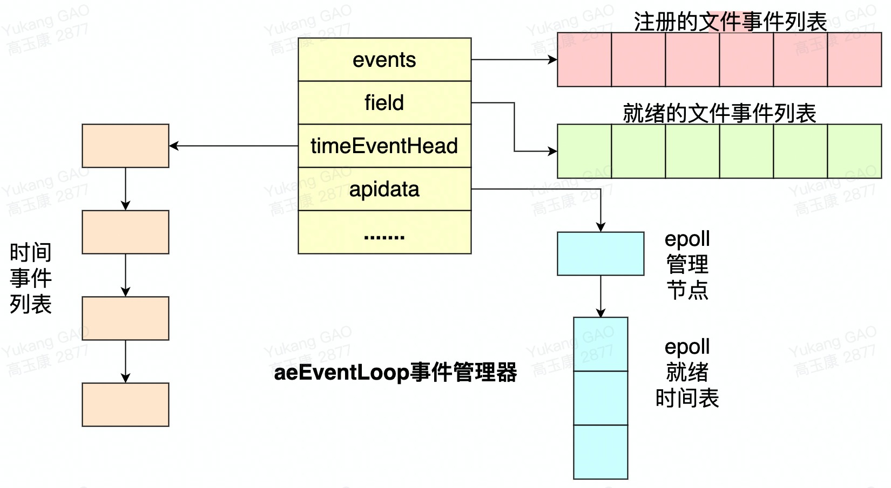
451定义: RDB(Redis DataBase),是redis默认的存储方式,RDB方式是通过快照(snapshotting)完成的.2
3触发方式: 4 -> 符合自定义配置的快照规则.5 -> 执行save或者bgsave命令.6 -> 执行flushall命令.7 -> 执行主从复制操作(第一次).8
9配置:10 save "" # 不使用RDB存储 不能主从11 save 900 1 # 表示900秒 内至少1个键被更改则进行快照。12 save 300 10 # 表示300秒 内至少10个键被更改则进行快照。13 save 60 10000 # 表示60秒 内至少10000个键被更改则进行快照。14
15执行流程: 16 -> redis父进程首先判断,当前是否在执行save,或bgsave/bgrewriteaof(aof文件重写命令)的子进程,如果在执行则bgsave命令直接返回.17 -> 父进程执行fork(调用OS函数复制主进程)操作创建子进程,这个复制过程中父进程是阻塞的,redis不能执行来自客户端的任何命令.18 -> 父进程fork后,bgsave命令返回"Background saving started"信息并不再阻塞父进程,并可以响应其他命令.19 -> 子进程创建RDB文件,根据父进程内存快照生成临时快照文件,完成后对原有文件进行原子替换(RDB始终完整).20 -> 子进程发送信号给父进程表示完成,父进程更新统计信息.21 -> 父进程fork子进程后,继续工作.22
23RDB文件结构:24 "REDIS" | "REDIS_VERSION" | "AUX_FIELD_KEY_VALUE_PAIRS" | "DB_NUM" | "DB_DICT_SIZE" | "EXPIRE_DICT_SIZE" | "KEY_VALUE_PAIRS" | "EOF" | "CHECK_SUM"25 -> REDIS: 头部5字节固定为"REDIS"字符串.26 -> REDIS_VERSION: 4字节"RDB"版本号不是Redis版本号.27 -> AUX_FIELD_KEY_VALUE_PAIRS: 辅助字段,以key-value的形式.28 1. redis-ver: redis版本号.29 2. redis-bits: 64/32 redis版本.30 3. ctime: 当前系统时间戳.31 4. used-mem: 使用内存.32 5. aof-preamble: 是否开启aof.33 6. repl-stream-db: 主从复制db.34 7. repl-id: 主从复制id.35 8. repl-offset: 主从复制偏移量.36 -> DB_NUM: 存储数据库号码.37 -> DB_DICT_SIZE: 字典大小.38 -> EXPIREE_DICT_SIZE: 过期key.39 -> KEY_VALUE_PAIRS: 主要数据,以key-value的形式存储.40 -> EOF: 结束标志.41 -> CHECK_SUM: 校验和,就是看文件是否损坏,或者是否被修改.42
43rdb优点: RDB是二进制压缩文件,占用空间小,便于传输(传给slaver);主进程fork子进程,可以最大化Redis性能,主进程不能太大,Redis的数据量不能太大,复制过程中主进程阻塞.44
45rdb缺点: 不保证数据完整性,会丢失最后一次快照以后更改的所有数据.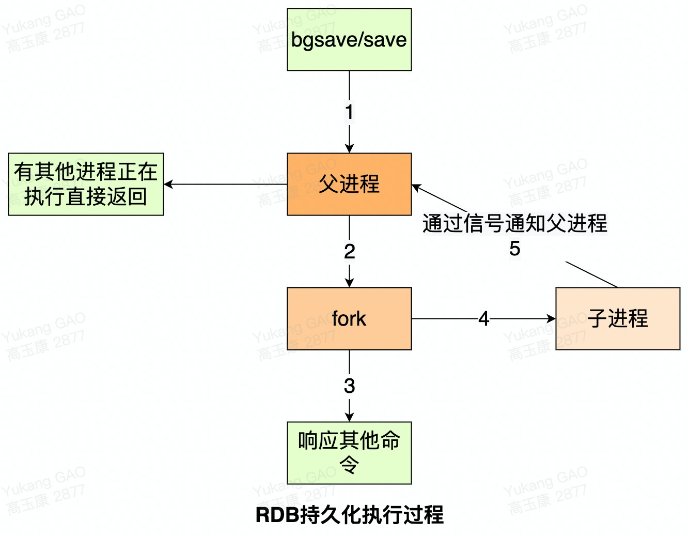
311介绍: (append only file)redis默认情况下是不开启的,开启AOF持久化后,redis将所有对数据库进行过写入的命令(及其参数RESP)记录到AOF文件,这样当Redis重启后只要按顺序回放这些命令就会恢复到原始状态了. AOF会记录过程，RDB只管结果.2
3配置: 4 appendonly yes # 可以通过修改redis.conf配置文件中的appendonly参数开启5 dir ./ # AOF文件的保存位置和RDB文件的位置相同，都是通过dir参数设置的。6 appendfilename appendonly.aof # 默认的文件名是appendonly.aof，可以通过appendfilename参数修改7
8原理: AOF文件中存储的是redis的命令,同步命令到AOF文件的整个过程可以分为三个阶段.9 -> 命令传播: redis将执行完的命令;命令的参数;命令的参数个数等信息发送到AOF程序中. 10 -> 缓存追加: AOF程序根据接收到的命令数据,将命令转换为网络通讯协议的格式,然后将协议内容追加到服务器的AOF缓存中. 11 -> 文件写入和保存: AOF缓存中的内容被写入到AOF文件末尾,如果设定的AOF保存条件被满足的话,fsync函数或者fdatasync函数会被调用,将写入的内容真正地保存到磁盘中.12
13AOF保存模式: 14 -> AOF_FSYNC_NO: 不保存.每次调用flushAppendOnlyFile函数,WRITE都会被执行,SAVE操作都会引起 Redis主进程阻塞.(Redis被关闭;AOF功能被关闭;系统的写缓存被刷新 才会进行保存)15 -> AOF_FSYNC_EVERYSEC: 每一秒钟保存一次(默认).SAVE每隔一秒钟就会执行一次,因为SAVE操作是由后台子线程(fork)调用的,所以它不会引起服务器主进程阻塞.16 -> AOF_FSYNC_ALWAYS: 每执行一个命令保存一次(不推荐).SAVE由redis主进程执行的，所以在SAVE执行期间,主进程会被阻塞.17
18AOF重写19 1. 定义: AOF记录数据占用空间会越来越多,需要重写节省空间.aof文件达到阈值时,自动地在后台(Fork子进程)对AOF进行重写.AOF重写并不需要对原有的AOF文件进行任何写入和读取,它针对的是数据库中键的当前值. redis将AOF重写程序放到子进程里执行,优点是不会阻塞主进程,使用子进程保证数据的安全性.20 2. AOF重写问题:子进程在进行AOF重写期间,主进程还需要继续处理命令,新的命令可能对现有的数据进行修改,这会让当前数据库的数据和重写后的AOF文件中的数据不一致.21 解决: redis增加了一个AOF重写缓存,这个缓存在fork出子进程之后开始启用,redis主进程在接到新的写命令之后,除了会将这个写命令的协议内容追加到现有的AOF文件之外,还会追加到这个缓存中. 这样也可以保证在重写期间主进程宕机子进程直接从缓存中重写保证数据的一致性.22 3. AOF重写触发配置:23 auto-aof-rewrite-percentage 100 #启动时aof文件大小为准24 auto-aof-rewrite-min-size 64mb #限制允许重写最小aof文件大小，也就是文件大小小于64mb的时候，不需要进行优化25 4.手动执行重写命令: 127.0.0.1:6379> bgrewriteaof26
27AOF方式数据还原: 服务器只要读入并重新执行一遍AOF文件里面保存的写命令,就可以还原服务器关闭之前的数据库状态Redis读取AOF文件并还原数据库状态的.28 -> 创建一个不带网络连接的伪客户端(fake client),因为redis的命令只能在客户端上下文中执行,而载入AOF文件时所使用的命令直接来源于AOF文件而不是网络连接,所以服务器使用了一个没有网络连接的伪客户端来执行AOF文件保存的写命令,伪客户端执行命令的效果和带网络连接的客户端执行命令的效果完全一样.29 -> 从AOF文件中分析并读取出一条写命令.30 -> 使用伪客户端执行被读出的写命令.31 -> 一直执行步骤2和步骤3直到AOF文件中的所有写命令都被处理完毕为止.131AOF和RDB对比:2 -> RDB存某个时刻的数据快照,采用二进制压缩存储,AOF存操作命令,采用文本存储(混合).3 -> RDB性能高;AOF性能较低.4 -> RDB在配置触发状态会丢失最后一次快照以后更改的所有数据,AOF设置为每秒保存一次,则最多丢2秒的数据.5 -> Redis以主服务器模式运行,RDB不会保存过期键值对数据,redis以从服务器模式运行,RDB会保存过期键值对,当主服务器向从服务器同步时,再清空过期键值对;AOF写入文件时,对过期的key会追加一条del命令,当执行AOF重写时,会忽略过期key和del命令.6 7应用场景:8 -> 内存数据库rdb+aof数据不容易丢.9 -> 有原始数据源: 每次启动时都从原始数据源中初始化,则不用开启持久化(数据量较小).10 -> 缓存服务器: rdb一般性能高在数据还原时有rdb+aof则还原aof,因为RDB会造成文件的丢失,AOF相对数据要完整.只有rdb.则还原rdb.11
12混合方式介绍: RDB和AOF各有优缺点,Redis4.0开始支持rdb和aof的混合持久化.如果把混合持久化打开,aof rewrite的时候就直接把rdb的内容写到aof文件开头.RDB的头+AOF的身体appendonly.aof.13混合方式配置: aof-use-rdb-preamble yes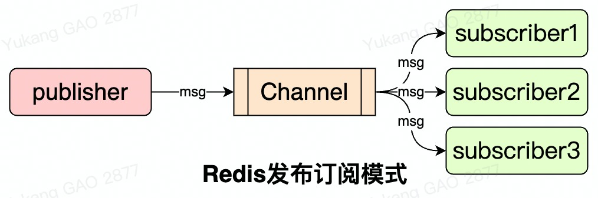
71使用Demo:2 subscribe ch1 ch23 publish ch1 'hello world'4
5使用场景:6 -> 在redis哨兵模式中, 哨兵通过发布与订阅的方式与redis主服务器和redis从服务器进行通信.7 -> 在redisson分布式锁释放的时候,是使用发布与订阅的方式通知的. 361事务概念回顾:2 事务是一起执行要么都成功, 要么都失败. 四个特点.3 -> Atomicity(原子性): 构成事务的的所有操作必须是一个逻辑单元, 要么全部执行, 要么全部不执行.4 -> Consistency(一致性): 数据库在事务执行前后状态都必须是稳定的或者是一致的.5 -> Isolation(隔离性): 事务之间不会相互影响.6 -> Durability(持久性): 事务执行成功后必须全部写入磁盘.7
8redis事务:9 -> redis的事务是通过multi;exec;discard;watch这四个命令来完成的.10 -> redis的单个命令都是原子性的,所以这里需要确保事务性的对象是命令集合.11 -> redis将命令集合序列化并确保处于同一事务的命令集合连续且不被打断的执行.12 -> redis不支持回滚操作.13
14命令说明: 15 -> redis事务就是放到某个队列中一起执行, 不支持回滚. 16 watch key #监视某个key17 multi #开启事务18 exec #执行事务19 discard #清除命令队列20 unwatch #取消监视21 -> 如果在执行过程中watch的key发生变化的话，在执行exec的话命令不会生效.22
23redis事务执行过程说明:24 1. 事务开始: 在RedisClient中, 有属性flags, 用来表示是否在事务中flags=REDIS_MULTI.25 2. 命令入队: RedisClient将命令存放在事务队列中(不包含EXEC,DISCARD,WATCH,MULTI命令).26 3. 事务队列: multiCmd *commands用于存放命令.27 4. 执行事务: RedisClient向服务器端发送exec命令, RedisServer会遍历事务队列并执行队列中的命令, 最后将执行的结果一次性返回给客户端. 如果某条命令在入队过程中发生错误, RedisClient将flags置为REDIS_DIRTY_EXEC, EXEC命令将会失败返回.28
29redis watch命令:30 使用wtach命令监听key键, redisDB有一个watched_keys属性, key是某个被监视的数据的key, value是一个链表, 记录了所有监视这个数据的客户端.31 监听机制触发条件: 当执行修改命令时, 监听这个key的RedisClient的flags置为REDIS_DIRTY_CAS.32 事务执行,RedisClient向服务器端发送exec命令, 服务器判断RedisClient的flags, 如果为REDIS_DIRTY_CAS, 则清空事务队列.33
34redis弱事务性:35 -> 在队列里正确的命令可以执行(非原子操作).36 -> 不支持回滚(Redis为了性能方面就忽略了事务回滚).571Lua脚本介绍:2 Lua是用标准C语言编写并以源代码形式开放, 可以嵌入应用程序中, 为应用程序提供扩展和定制功能.3 Lua应用场景: 游戏开发;独立应用脚本;Web应用脚本;扩展和数据库插件.4 redis中特点: 脚本的命令是原子的.5
6OpenRestry介绍: 是一个通过Lua扩展Nginx实现的可伸缩的Web平台, 内部集成了大量精良的Lua库;第三方模块以及大多数的依赖项. 用于方便的搭建能够处理超高并发(日活千万级别);扩展性极高的动态Web应用;Web服务和动态网关. 7OpenRestry特点: 功能和nginx类似, 由于支持lua动态脚本,可以更加灵活实现鉴权;限流;分流;日志记录;灰度发布等功能.8OpenRestry场景: 可提供负载均衡;请求路由;安全认证;服务鉴权;流量控制与日志监控等服务.9相似产品: Kong(Api Gateway);tengine(阿里).10
11Lua脚本环境安装:12 下载地址: http://www.lua.org/download.html13 安装命令:14 yum -y install readline-devel ncurses-devel15 tar -zxvf lua-5.3.5.tar.gz16 #在src目录下17 make linux 或 make install18 #也可以通过下面命令安装19 yum -y install readline-devel ncurses-devel20
21Redis执行Lua命令介绍:22 eval: 执行Lua脚本. 23 eval执行命令格式: eval script numkeys key [key ...] arg [arg ...] 24 -> script: Lua脚本代码.25 -> numkeys: 指定key的个数.26 -> key [key ...]: 脚本中使用到的key变量.27 -> arg [arg ...]: 额外参数, 脚本中通过全局变ARGV[1],ARGV[2]...访问.28 eval DEMO: eval "return {KEYS[1],KEYS[2],ARGV[1],ARGV[2]}" 2 key1 key2 first second29 eval注意: 30 -> 脚本中return将值返回给客户端.31 32 ------------------------------------------------------------------------------------33 evalsha: 执行lua脚本.34 evalsha DEMO: 35 script load "return redis.call('set',KEYS[1],ARGV[1])"36 #返回->"c686f316aaf1eb01d5a4de1b0b63cd233010e63d"37 #执行命令38 evalsha c686f316aaf1eb01d5a4de1b0b63cd233010e63d 1 n239 evalsha优点: 先上传脚本, 在执行的时候避免上传节省带宽开销.40 ------------------------------------------------------------------------------------41 script load "Lua脚本": 将脚本加载到redis中.42 script flush: 清除脚本缓存.43 script exists "load返回的校验和": 判断脚本是否存在.44 script kill "load返回的校验和": 杀死当前正在运行的脚本.45
46Redis客户端执行Lua脚本:47 redis.call(): 获取返回值, 如果出错, 则返回错误信息, 不继续执行. DEMO: redis.call('set',KEYS[1],ARGV[1]).48 redis.pcall(): 获取返回值, 如果出错, 则记录错误信息, 继续执行. DEMO: redis.pcall('set',KEYS[1],ARGV[1]).49
50Redis Lua脚本复制:51 脚本传播模式: 默认方式, 主服务器执行啥命令会把命令同样传给从服务器(AOF命令).52 命令传播模式: 将脚本中所有执行的写命令复制到从服务器中.53 命令传播模式开启方式: redis.replicate_commands()只对调用该函数的脚本有效.54 55pipeline|事务|Lua对比:56 相同点: 三者都可以批量执行命令.57 不同点: pipeline无原子性，命令都是独立的，属于无状态的操作;事务和Lua是有原子性的, Lua脚本可借助Lua语言可在服务器端存储的便利性定制和简化操作脚本的原子性要强于事务, Lua脚本执行期间, 另外的客户端其它任何脚本或者命令都无法执行, 因此脚本的执行时间应该尽量短.391慢查询日志: 可用于监视和优化查询.2
3配置: redis.conf文件中4 #执行时间超过多少微秒的命令请求会被记录到日志上 0 :全记录 <0 不记录5 slowlog-log-slower-than 100006 #slowlog-max-len 存储慢查询日志条数7 slowlog-max-len 1288临时配置: 重启失效.9 config set slowlog-log-slower-than 微秒10 config set slowlog-max-len 条数11
12存储方式: Redis使用列表存储慢查询日志,采用队列方式(FIFO).13 14查看: 15slowlog get16 1) (integer) 7 #日志的唯一标识符(uid)17 2) (integer) 1589774302 #命令执行时的UNIX时间戳18 3) (integer) 65 #命令执行的时长(微秒)19 4) 1) "get" #执行命令及参数20 2) "name:002"21 5) "127.0.0.1:37277"22 6) ""23 2) 1) (integer) 624 2) (integer) 158977428125 3) (integer) 726 4) 1) "set"27 2) "name:002"28 3) "zhangfei"29 5) "127.0.0.1:37277"30 6) ""31
32慢查询定位|处理:33 -> 尽量使用短的key, 对于value有些也可精简, 能使用int就int.34 -> 避免使用keys *;hgetall等全量操作.35 -> 减少大key的存取, 打散为小key.36 -> 将rdb改为aof模式rdb fork 子进程主进程阻塞redis大幅下降关闭持久化,(适合于数据量较小)改aof命令式.37 -> 想要一次添加多条数据的时候可以使用管道.38 -> 尽可能地使用哈希存储.39 -> 尽量限制下redis使用的内存大小, 这样可以避免redis使用swap分区或者出现OOM错误内存与硬盘的swap.81监视器: 客户端输入monitor命令就可以监控服务器端接收的redis命令.2
3监视器实现方式: redisServer维护一个monitors的链表, 记录自己的监视器, 每次收到monitor命令之后,将客户端追加到链表尾.4 5监视器应用场景: 主要用来监控redis执行命令情况,可以在grafana|prometheus或redis_exporter中查看.6 -> grafana是一个开箱即用的可视化工具,具有功能齐全的度量仪表盘和图形编辑器,有灵活丰富的图形化选项,可以混合多种风格,支持多个数据源特点.7 -> prometheus是一个开源的服务监控系统, 它通过HTTP协议从远程的机器收集数据并存储在本地的时序数据库上.8 -> redis_exporter是prometheus提供了redis指标的导出, 配合prometheus以及grafana进行可视化及监控.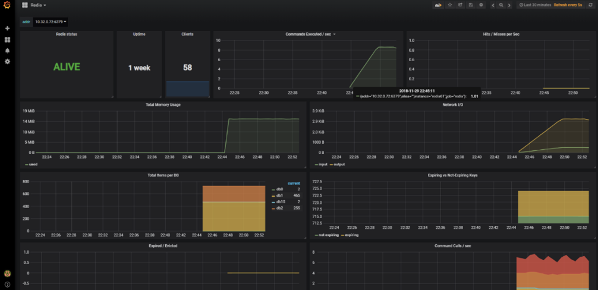